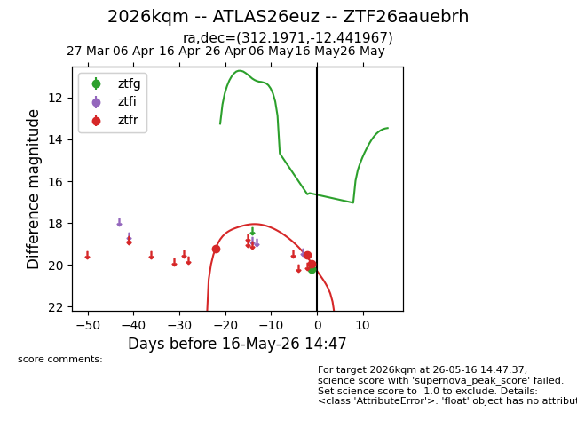
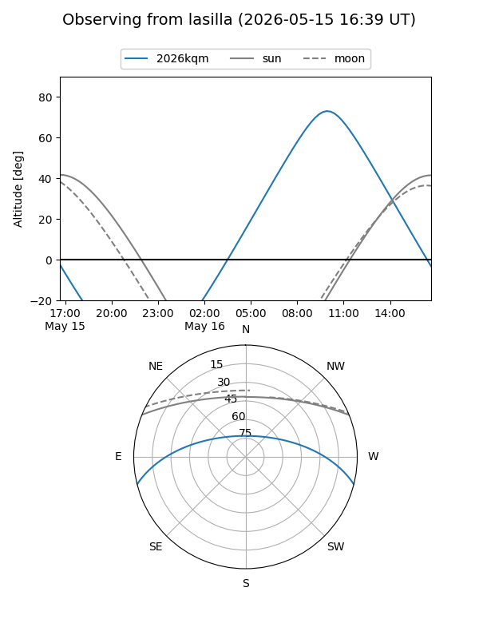
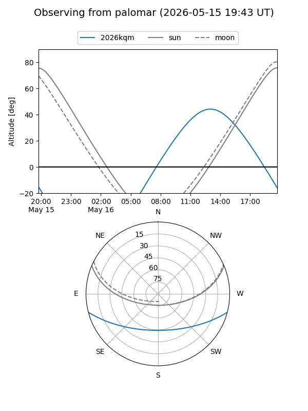
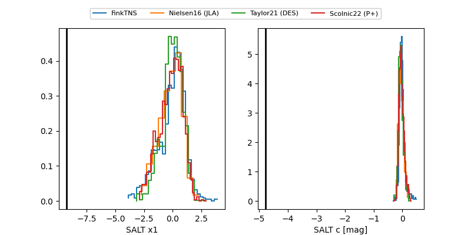

2026kqm
Target 2026kqm at 2026-05-16 14:49
Aliases and brokers:
FINK: link
Lasair: link
ALeRCE: link
TNS: link
YSE: link
alt names
ZTF26aauebrh (ztf,fink_ztf)
2026kqm (tns,yse)
ATLAS26euz (atlas)
Coordinates:
equatorial (ra, dec) = 312.1971,-12.44197
equatorial (HMS+DMS) = 20:48:47.30,-12:26:31.08
galactic (l, b) = (34.7093,-31.60466)
Flags:
Photometry:
last ztfg=20.20, ztfr=19.95
1 ztfg, 3 ztfr detections
Lightcurve

Visibility


Additional plots
